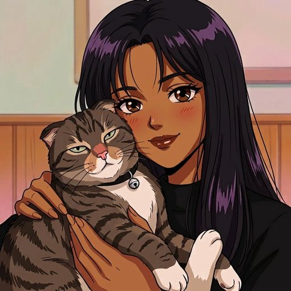
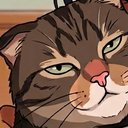

Every paper I’ve read and plan to read for my PhD, tagged by plan arm, with why it matters and my notes.


Changes are saved to on GitHub. Paste a fine-grained personal access token for that repository with Contents: Read and write permission. It is kept only in this browser. Create a token